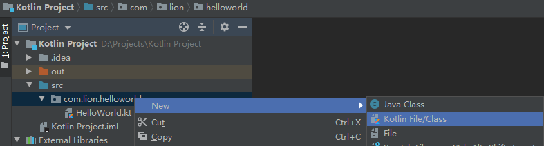
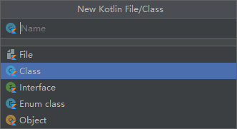

在这之前，我们都是在文件（file）中编写代码，使用main函数来执行我们的代码块。在正式的编程中，文件仅用于编写公共类库、脚本等，而业务类等，一般都是以类来实现的。
一个Kotlin类，可能包含有构造函数、初始化代码块、函数、属性、内部类和对象声明。
类定义方式为：class 类名 {}
接下来，我们定义一个Kotlin类。在项目中的“src"中的目录下点击鼠标右键。

在弹出的菜单中点击创建”Kotlin File/Class“

我们这里创建一个为”Person"的类。在Kotlin中，类名要求大写字母开头，多字母组合时，使用首字母大写的驼峰结构，比如：“OnePerson"。
输入”Person“之后，按回车键，创建一个新的空类。
xxxxxxxxxxpackage com.lion.personclass Person {}在Kotlin中，也可以有空类。空类仅包含class Empty，而且不包含{}。
xxxxxxxxxxclass Empty一般情况下，创建一个空类是没有任何意义的。我们继续来看我们的Person类。
我们依次按照Kotlin类中所包含的信息来创建一个完整的类。
首先，我们创建一个构造函数。这里要说明的是，一个类，如果不创建（不指定）构造函数时，系统会为其创建一个没有参数的默认构造器。
比如Person类，它包含一个没有参数的构造函数。
Kotlin的构造函数分为主构造函数、次构造函数，主构造函数有且仅有一个，而次构造函数可以有0个或多个，但是在次构造函数中必须直接或间接的调用主构造函数。
无参的主构造函数不用显式声明，而带参数的主构造函数，其声明方式为class ClassName constructor(../private/.. val/var para: Type)
xxxxxxxxxxclass Person constructor(val name: String) {}在添加非私有的主构造函数时，我们一般会省略constructor关键字。因此上面的类声明部分，我们可以写成：
xxxxxxxxxxclass Person (val name: String) {}如果有主构造方法参数，那么在创建该类的时候，必须传入对应的参数。
xxxxxxxxxxfun main() { val person = Person("lion")}我们接着给”Person“类创建一个次构造函数。
xxxxxxxxxxclass Person (val name: String) { constructor(name: String, age: Int): this(name)}需要注意的是，主构造函数的参数可以声明类型为val/var，并且可以添加访问修饰符如private等，但是次构造函数是不允许的，而且次构造函数后使用: this(name)调用了主构造函数。
另外要说明的是，构造函数是可以设置默认值的，这样，在创建类对象时，可以省略有默认值的参数。比如：
xxxxxxxxxxclass Person (val name: String = "lion") {}xxxxxxxxxxfun main() { val person = Person()}接下来，我们学习类属性。
类属性是包含在类块{}之间的一系列可变var和不可变val变量声明。
xxxxxxxxxxclass Person (val name: String = "lion") { private var age: Int = 18 private val address: String = "Xi'an, Shanxi, China."}那我们什么时候使用可变var变量，什么时候使用不可变val进行属性声明呢？
很容易理解的是，可变，就意味着这个变量的值可能会发生变化，比如年龄，每当过完一个生日，它就需要变化一次，因此age就被定义为可变属性；而你的地址address，可能是比较固定不变的，因此被定义为不可变属性。可变属性是能够重新赋值的，而不可变属性则不能重新赋值。
可变属性的声明语法为：
xxxxxxxxxxvar <propertyName>[: <PropertyType>] [= <property_initializer>]在Kotlin中，可变属性会默认生成getter和setter方法，以提供赋值和获取它的值，在Kotlin中被重写为get和set。当然我们也可以重写get和set方法，以改变其默认方式。
比如我们重写了age的getter和setter方法，尤其是setter方法，限定了输入年龄的合法性：
xxxxxxxxxx private var age: Int = 18 get() = field set(value) { if (value > 0) { field = value } else { field = 18 } }在上面的代码中，我们看到有一个field。这个称之为幕后属性。在Kotlin中，getter方法不能直接使用属性名称，Kotlin中调属性就相当于调用了它的getter方法，如果在get中直接使用属性，就会造成死循环而使程序崩溃，因此使用field替代变量本身。
需要注意的是，不可变val属性仅有getter方法，而没有setter方法。
除了构造函数外，类中还可以定义其他函数，比如，我们给Person类，增加一个run函数，以实现它跑的能力。
xxxxxxxxxx /** * Person run. */ fun run() { println("person run.") }一般情况下， 函数声明关键字之前不加修饰符，默认为公开函数，持有类对象之后，就可以调用该函数。当然处于安全性考虑，可以给函数添加修饰符，以实现不同的访问权限。
函数的可用修饰符一般有internal、open、private、abstract，需要注意的是abstract为抽象方法声明，需要类也是抽象类，才可以使用，open一般在继承关系的父类中使用。
建议性的，非私有函数需要增加注释，以方便调用方获知函数所提供的能力。
另外，我们不仅可以在类中创建属性、方法，也可以创建类。在类中创建的类，称为内部类或嵌套类。
那什么叫作内部类呢，我们看下面这段代码。
xxxxxxxxxxclass Outer { private val o: Int = 1 private val i: Inner = Inner() private fun outFun() { i.innerFun() } fun pubOutFun() { println("public out fun.") outFun() } /** * This is inner class. */ inner class Inner { private val i: Int = o fun innerFun() { println("public inner fun.") privateInnerFun() } private fun privateInnerFun() { val outer = this@Outer println("out.o = ${outer.o}") } }}可能乍一看，感觉比较绕，我们来解释一下。
内部类用关键字inner声明在另一个类的内部，其功能和外部类没有区别。值得注意的一点就是，外部类可以创建内部类的对象，而内部类可以直接使用外部类的对象，也可以通过外部类的对象使用外部类的变量，这是因为内部类默认持有一个外部类的对象。如实例代码中的privateInnerFun()函数。但是外部类不能通过内部类的实例，访问内部类的私有变量。
那可能有这样的疑问，其他类中能否使用这个类的内部类呢？
答案是肯定的。
xxxxxxxxxx val innerOfOuter = Outer().Inner() innerOfOuter.innerFun()而且我们看到，也能够正常调用内部类的非私有函数。要说明的是，创建一个类的内部类，必须先创建一个外部类对象，依赖外部类对象创建它的内部类对象。所以我们看到的是Out().Inner()，这和嵌套类是有区别的，嵌套类我们晚些再说。
Kotlin针对内部类还有一种内部类，称作匿名内部类。
匿名内部类，顾名思义，就是没有显式的类名。
xxxxxxxxxxclass Anonymous { fun testAnon() { val a = object : Anon() { override fun anony() { println("This is a function of anonymous class") } } } abstract class Anon { open abstract fun anony() }}在函数testAnon()中，object : Anon() {}就称作匿名内部类。匿名内部类一般在创建抽象类或接口实现时使用。这里是通过创建匿名内部类实现了抽象类Anon的函数。这里需要说明的是，实现匿名内部类，需要用到关键字object。实现接口方法的方式基本雷同，就不再举例子了。
这里既然提到了抽象类，那我们看一下，抽象类是什么样的一个类。
在Kotlin中，抽象类由关键字abstract修饰，而类中也可以声明抽象函数，抽象函数也是用abstract来修饰，并且没有函数体的函数，默认修饰符为，open可以省略。继承或实现抽象类，必须实现其抽象函数（继承类也为抽象类的，可以不实现父类中的抽象函数）。关于继承，我们后面会详细的学到。
接下来，我们看一下另外一种嵌套在其他类中的类，嵌套类。
xxxxxxxxxxclass Outer { private val out = 1 private fun privOut() { val nested = Nested() nested.nested() } fun out() { privOut() } /** * Nested class. */ class Nested { private fun privNested() { val o = Outer() o.privOut() o.out o.out() } fun nested() { privNested() } }}感觉是不是和内部类很像，但是，还是有区别的。在内部类中，我们可以直接访问外部类的变量和函数，在嵌套类中，我们访问外部类和访问其他类的方式一样，必须先创建一个外部类的对象，才能够访问外部类。但是有一点，我们可以访问外部类的私有变量。
xxxxxxxxxxfun main() { val nested = Outer.Nested() nested.nested()}在外部创建嵌套类对象时，也和内部类是不一样的，使用的是Out.Nested()。
关于类的基本用法，就到这里了，接下来我们要学习的是本篇有提到的类的继承。